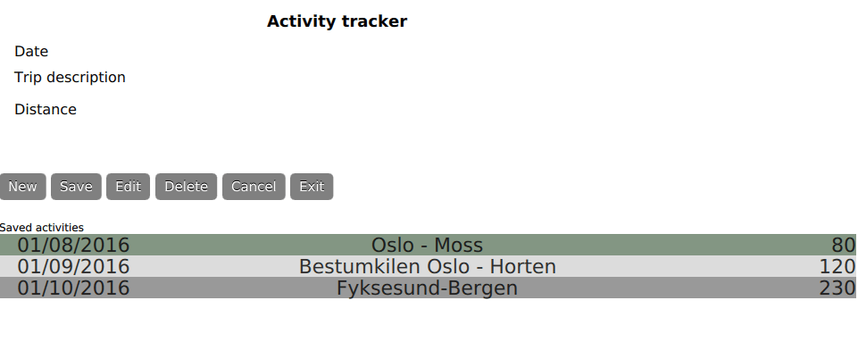

Qt Quick Examples - Local Storage
A collection of QML local storage examples.

Local Storage is a collection of small QML examples relating to Qt Quick's local storage functionality.
Running the Example
To run the example from Qt Creator, open the Welcome mode and select the example from Examples. For more information, see Qt Creator: Tutorial: Build and run.
Activity Tracker
Activity tracker allows you to keep track of walks, hikes, or bike trips.
All database transactions are handled in Database.js. The database is checked at startup, and created if it does not exist. LocalStorage uses SQLite, which is a self-contained, serverless, public-domain database. Opening a connection to the database is handled at the beginning of each function that manipulates or retrieves data.